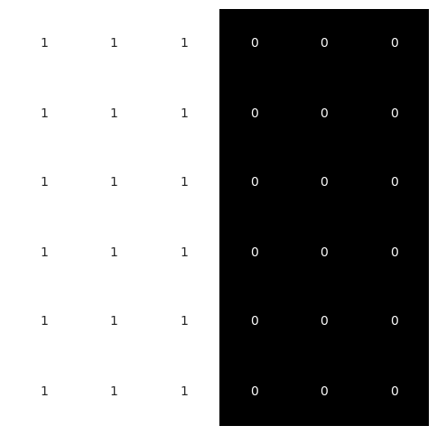
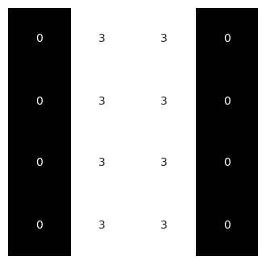
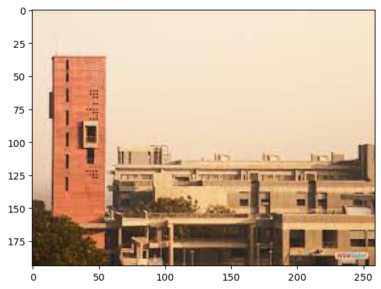
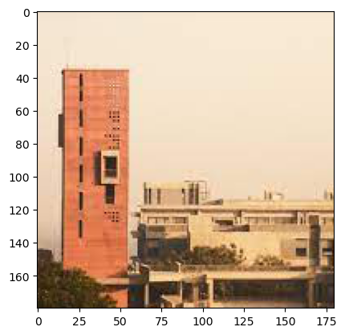
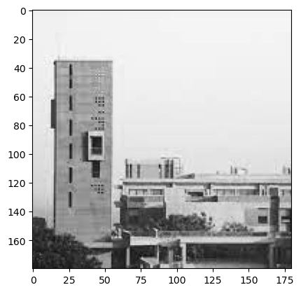
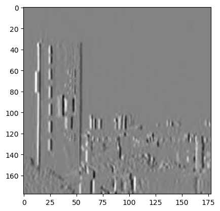
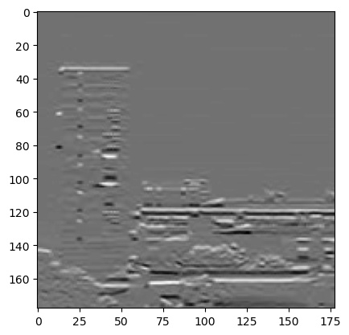

import torch
import torch.nn.functional as F
from torch import nn
import pandas as pd
import matplotlib.pyplot as plt # for making figures
import seaborn as sns
%matplotlib inlineCNN Edge 2d
CNNs
# Create a tensor of size 6x6 with first three columns as 1 and rest as 0
x = torch.zeros(6, 6)
x[:, :3] = 1
print(x)tensor([[1., 1., 1., 0., 0., 0.],
[1., 1., 1., 0., 0., 0.],
[1., 1., 1., 0., 0., 0.],
[1., 1., 1., 0., 0., 0.],
[1., 1., 1., 0., 0., 0.],
[1., 1., 1., 0., 0., 0.]])x.shapetorch.Size([6, 6])# Plot the tensor with equal aspect ratio
plt.figure(figsize=(6, 6))
sns.heatmap(x, cbar=False, xticklabels=False, yticklabels=False, cmap='gray', annot=True)<AxesSubplot: >
# Create a 3x3 kernel with first column as 1, second as 0 and third as -1
k = torch.tensor([[1, 0, -1], [1, 0, -1], [1, 0, -1]]).float()
print(k)tensor([[ 1., 0., -1.],
[ 1., 0., -1.],
[ 1., 0., -1.]])# Apply the kernel to the image
y = F.conv2d(x.view(1, 1, 6, 6), k.view(1, 1, 3, 3))
print(y)
# Create figure of size of y
plt.figure(figsize=(y.shape[2], y.shape[3]))
sns.heatmap(y[0, 0], cbar=False, xticklabels=False, yticklabels=False, cmap='gray', annot=True)tensor([[[[0., 3., 3., 0.],
[0., 3., 3., 0.],
[0., 3., 3., 0.],
[0., 3., 3., 0.]]]])<AxesSubplot: >
im = plt.imread('lm.jpeg')
plt.imshow(im)<matplotlib.image.AxesImage at 0x151220670>
# Crop to left 180 X 180 pixels
im = im[:180, :180]
plt.imshow(im, cmap='gray')<matplotlib.image.AxesImage at 0x1512b3cd0>
# Convert to grayscale
im = im.mean(axis=2)
plt.imshow(im, cmap='gray')<matplotlib.image.AxesImage at 0x15133dac0>
im.shape(180, 180)# Detect edges using our filter
k = torch.tensor([[1, 0, -1], [1, 0, -1], [1, 0, -1]]).float()
# Apply the kernel to the image
y = F.conv2d(torch.tensor(im).float().view(1, 1, 180, 180), k.view(1, 1, 3, 3))
# plot the result
#plt.figure(figsize=(y.shape[2], y.shape[3]))
plt.imshow(y[0, 0], cmap='gray')<matplotlib.image.AxesImage at 0x197097430>
# Detect horizontal edges using our filter
k = torch.tensor([[1, 0, -1], [1, 0, -1], [1, 0, -1]]).float().T
# Apply the kernel to the image
y = F.conv2d(torch.tensor(im).float().view(1, 1, 180, 180), k.view(1, 1, 3, 3))
plt.imshow(y[0, 0], cmap='gray')<matplotlib.image.AxesImage at 0x197105730>